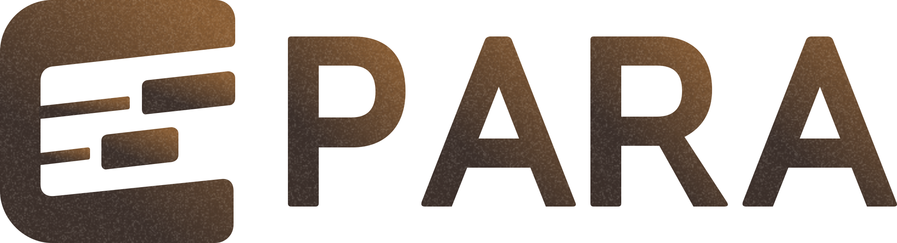
Horizontal logo
Existing lockup; exact approved paths and transforms. Use the matching light/dark treatment.


01_LOGO/Grain_Gradient/para-horizontal-light-grain.svg
PARA / brand resources · grain edition 01
An offline resource catalogue for designers and developers. Open after unzipping the complete package. The approved logo geometry is unchanged; new artwork extends the grain-gradient treatment.
Grain is a separate clipped raster layer. Geometry, gradients and type remain editable. Use solid icons for compact controls. App and favicon adaptations are proposals.
67 asset groups

Existing lockup; exact approved paths and transforms. Use the matching light/dark treatment.
01_LOGO/Grain_Gradient/para-horizontal-light-grain.svg
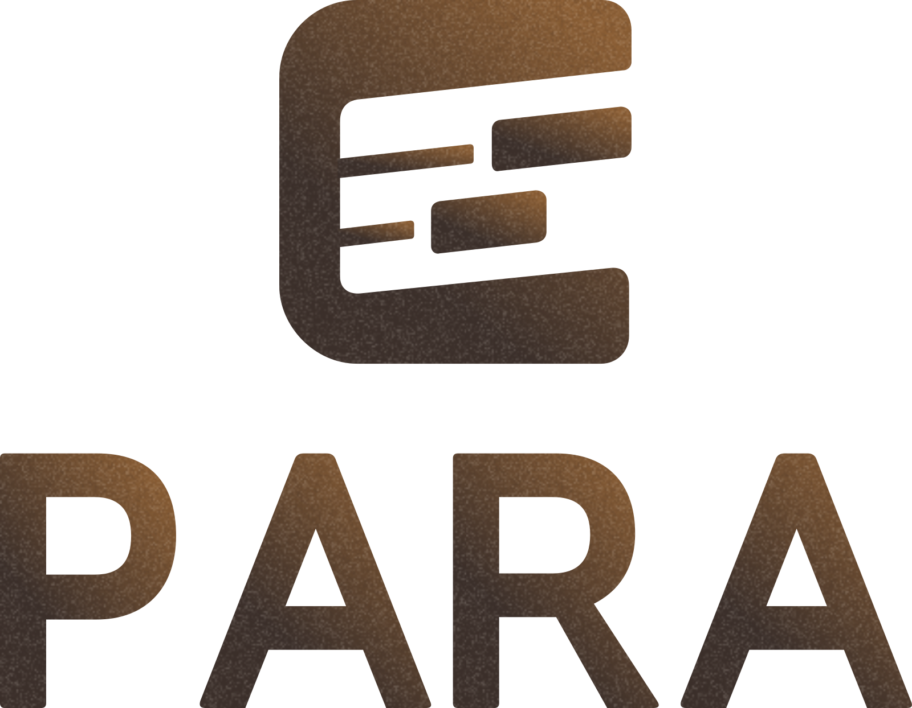
Existing lockup; exact approved paths and transforms. Use the matching light/dark treatment.
01_LOGO/Grain_Gradient/para-stacked-light-grain.svg
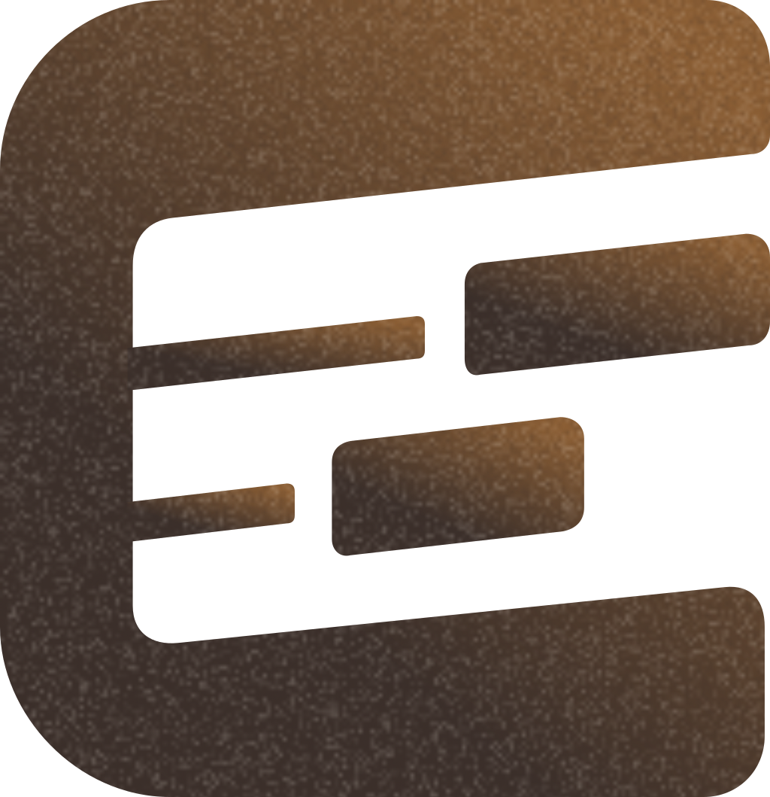
Existing lockup; exact approved paths and transforms. Use the matching light/dark treatment.
01_LOGO/Grain_Gradient/para-symbol-light-grain.svg
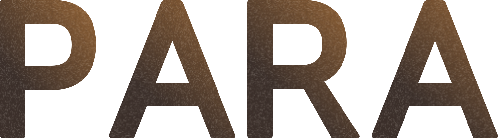
Existing lockup; exact approved paths and transforms. Use the matching light/dark treatment.
01_LOGO/Grain_Gradient/para-wordmark-light-grain.svg
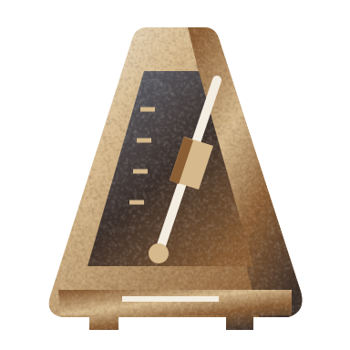
Approved review specimen. Detailed ≥72 px; small ≥48 px.
04_ICONS/Landing_and_Communication/para-expressive-rhythm-grain.svg
Approved review specimen. Detailed ≥72 px; small ≥48 px.
04_ICONS/Landing_and_Communication/para-expressive-recording-grain.svg
Approved review specimen. Detailed ≥72 px; small ≥48 px.
04_ICONS/Landing_and_Communication/para-expressive-feedback-grain.svg
Open practice book with one phrase on each page. Detailed ≥72 px; small ≥48 px.
04_ICONS/Landing_and_Communication/para-expressive-practise-grain.svg
Recorded clip moving upwards into a submission. Detailed ≥72 px; small ≥48 px.
04_ICONS/Landing_and_Communication/para-expressive-video-submission-grain.svg
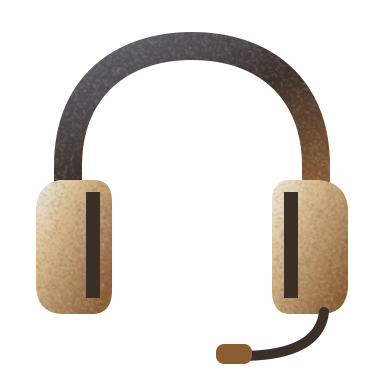
Over-ear headphones; quiet open centre. Detailed ≥72 px; small ≥48 px.
04_ICONS/Landing_and_Communication/para-expressive-listening-grain.svg
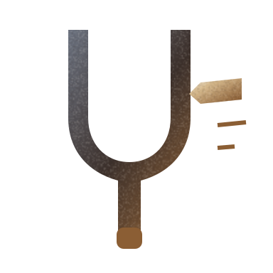
Tuning fork and one matching-pitch marker. Detailed ≥72 px; small ≥48 px.
04_ICONS/Landing_and_Communication/para-expressive-pitch-grain.svg
A teacher-issued score task held by a clip. Detailed ≥72 px; small ≥48 px.
04_ICONS/Landing_and_Communication/para-expressive-assignment-grain.svg
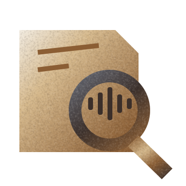
Magnifier isolates a moment in a recorded attempt. Detailed ≥72 px; small ≥48 px.
04_ICONS/Landing_and_Communication/para-expressive-review-grain.svg
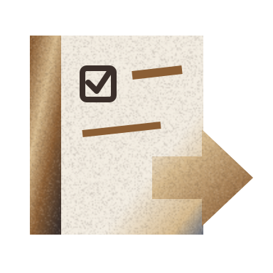
One chosen task and an unambiguous forward direction. Detailed ≥72 px; small ≥48 px.
04_ICONS/Landing_and_Communication/para-expressive-next-step-grain.svg
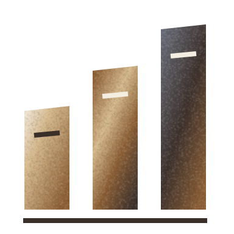
Accumulating practice pages; rising form is symbolic, not a measured result. Detailed ≥72 px; small ≥48 px.
04_ICONS/Landing_and_Communication/para-expressive-progress-grain.svg
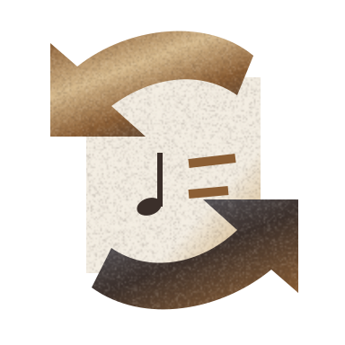
A phrase returned to with a specific focus; no automatic grading. Detailed ≥72 px; small ≥48 px.
04_ICONS/Landing_and_Communication/para-expressive-repeat-improve-grain.svg
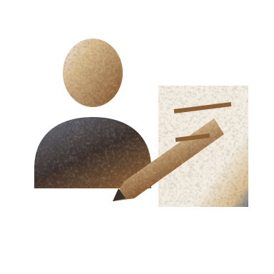
A person using a pencil and score to guide practice. Detailed ≥72 px; small ≥48 px.
04_ICONS/Landing_and_Communication/para-expressive-teacher-grain.svg
Learner looking into an open practice book. Detailed ≥72 px; small ≥48 px.
04_ICONS/Landing_and_Communication/para-expressive-student-grain.svg
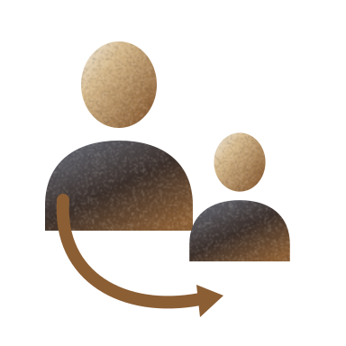
An adult alongside a younger learner; role needs a visible label. Detailed ≥72 px; small ≥48 px.
04_ICONS/Landing_and_Communication/para-expressive-parent-grain.svg
Familiar 24-unit control; 1.8-unit strokes. Solid at 16–32 px. Grain for ≥64 px uses.
04_ICONS/Application_UI/para-ui-menu-24-solid.svg
Familiar 24-unit control; 1.8-unit strokes. Solid at 16–32 px. Grain for ≥64 px uses.
04_ICONS/Application_UI/para-ui-close-24-solid.svg
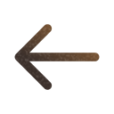
Familiar 24-unit control; 1.8-unit strokes. Solid at 16–32 px. Grain for ≥64 px uses.
04_ICONS/Application_UI/para-ui-back-24-solid.svg
Familiar 24-unit control; 1.8-unit strokes. Solid at 16–32 px. Grain for ≥64 px uses.
04_ICONS/Application_UI/para-ui-forward-24-solid.svg
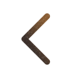
Familiar 24-unit control; 1.8-unit strokes. Solid at 16–32 px. Grain for ≥64 px uses.
04_ICONS/Application_UI/para-ui-chevron-left-24-solid.svg
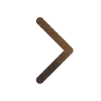
Familiar 24-unit control; 1.8-unit strokes. Solid at 16–32 px. Grain for ≥64 px uses.
04_ICONS/Application_UI/para-ui-chevron-right-24-solid.svg
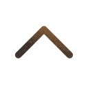
Familiar 24-unit control; 1.8-unit strokes. Solid at 16–32 px. Grain for ≥64 px uses.
04_ICONS/Application_UI/para-ui-chevron-up-24-solid.svg
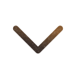
Familiar 24-unit control; 1.8-unit strokes. Solid at 16–32 px. Grain for ≥64 px uses.
04_ICONS/Application_UI/para-ui-chevron-down-24-solid.svg
Familiar 24-unit control; 1.8-unit strokes. Solid at 16–32 px. Grain for ≥64 px uses.
04_ICONS/Application_UI/para-ui-home-24-solid.svg
Familiar 24-unit control; 1.8-unit strokes. Solid at 16–32 px. Grain for ≥64 px uses.
04_ICONS/Application_UI/para-ui-search-24-solid.svg
Familiar 24-unit control; 1.8-unit strokes. Solid at 16–32 px. Grain for ≥64 px uses.
04_ICONS/Application_UI/para-ui-settings-24-solid.svg
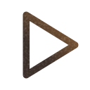
Familiar 24-unit control; 1.8-unit strokes. Solid at 16–32 px. Grain for ≥64 px uses.
04_ICONS/Application_UI/para-ui-play-24-solid.svg
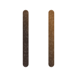
Familiar 24-unit control; 1.8-unit strokes. Solid at 16–32 px. Grain for ≥64 px uses.
04_ICONS/Application_UI/para-ui-pause-24-solid.svg
Familiar 24-unit control; 1.8-unit strokes. Solid at 16–32 px. Grain for ≥64 px uses.
04_ICONS/Application_UI/para-ui-stop-24-solid.svg
Familiar 24-unit control; 1.8-unit strokes. Solid at 16–32 px. Grain for ≥64 px uses.
04_ICONS/Application_UI/para-ui-record-24-solid.svg
Familiar 24-unit control; 1.8-unit strokes. Solid at 16–32 px. Grain for ≥64 px uses.
04_ICONS/Application_UI/para-ui-microphone-24-solid.svg
Familiar 24-unit control; 1.8-unit strokes. Solid at 16–32 px. Grain for ≥64 px uses.
04_ICONS/Application_UI/para-ui-video-24-solid.svg
Familiar 24-unit control; 1.8-unit strokes. Solid at 16–32 px. Grain for ≥64 px uses.
04_ICONS/Application_UI/para-ui-upload-24-solid.svg
Familiar 24-unit control; 1.8-unit strokes. Solid at 16–32 px. Grain for ≥64 px uses.
04_ICONS/Application_UI/para-ui-attachment-24-solid.svg
Familiar 24-unit control; 1.8-unit strokes. Solid at 16–32 px. Grain for ≥64 px uses.
04_ICONS/Application_UI/para-ui-assignment-24-solid.svg
Familiar 24-unit control; 1.8-unit strokes. Solid at 16–32 px. Grain for ≥64 px uses.
04_ICONS/Application_UI/para-ui-comment-24-solid.svg
Familiar 24-unit control; 1.8-unit strokes. Solid at 16–32 px. Grain for ≥64 px uses.
04_ICONS/Application_UI/para-ui-review-24-solid.svg
Familiar 24-unit control; 1.8-unit strokes. Solid at 16–32 px. Grain for ≥64 px uses.
04_ICONS/Application_UI/para-ui-progress-24-solid.svg
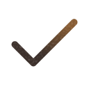
Familiar 24-unit control; 1.8-unit strokes. Solid at 16–32 px. Grain for ≥64 px uses.
04_ICONS/Application_UI/para-ui-check-24-solid.svg
Familiar 24-unit control; 1.8-unit strokes. Solid at 16–32 px. Grain for ≥64 px uses.
04_ICONS/Application_UI/para-ui-information-24-solid.svg
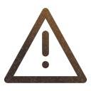
Familiar 24-unit control; 1.8-unit strokes. Solid at 16–32 px. Grain for ≥64 px uses.
04_ICONS/Application_UI/para-ui-warning-24-solid.svg
Familiar 24-unit control; 1.8-unit strokes. Solid at 16–32 px. Grain for ≥64 px uses.
04_ICONS/Application_UI/para-ui-error-24-solid.svg
Familiar 24-unit control; 1.8-unit strokes. Solid at 16–32 px. Grain for ≥64 px uses.
04_ICONS/Application_UI/para-ui-language-24-solid.svg
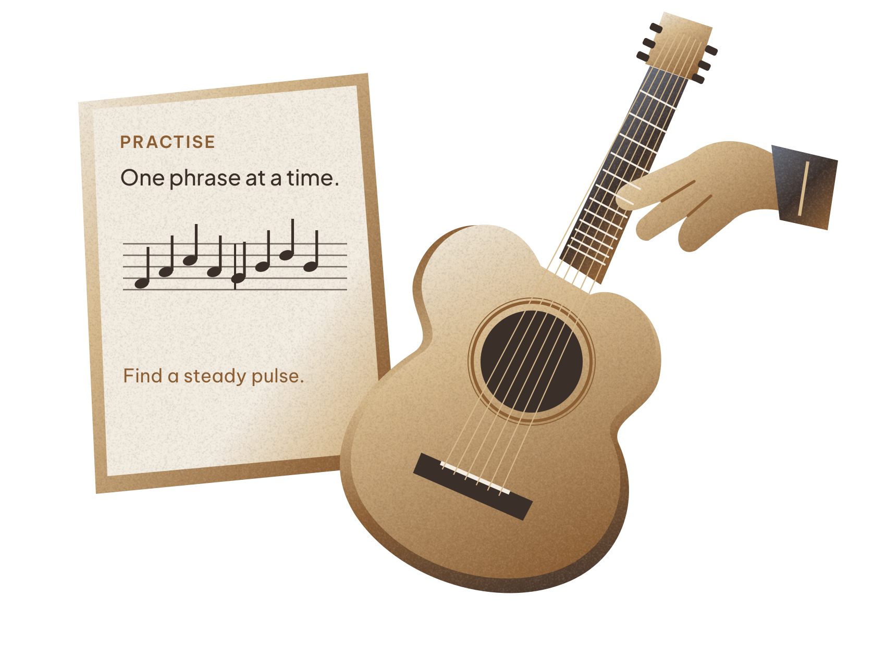
One hand presses the guitar strings while the learner returns to a short score phrase. Recommended ≥480 px.
05_GRAPHIC_ARTWORK/Grain_Gradient/para-art-01-practise-en-grain.svg
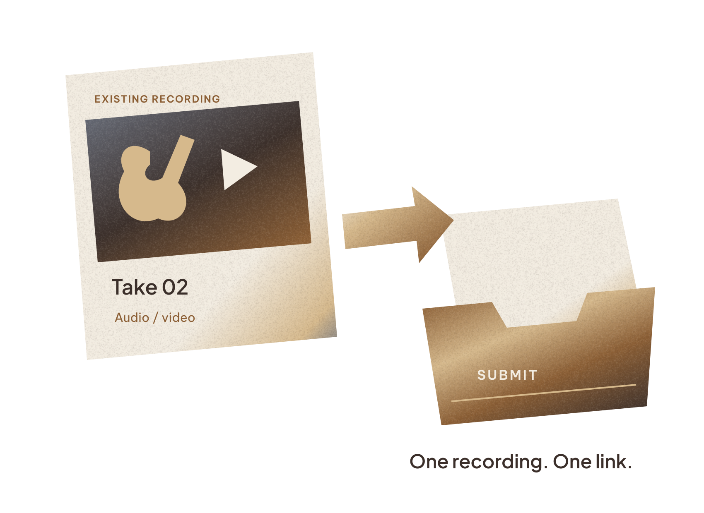
An existing music recording travels into a receiving tray through one clear transfer. This is a conceptual submission illustration, not a product screen. Recommended ≥480 px.
05_GRAPHIC_ARTWORK/Grain_Gradient/para-art-02-submit-en-grain.svg
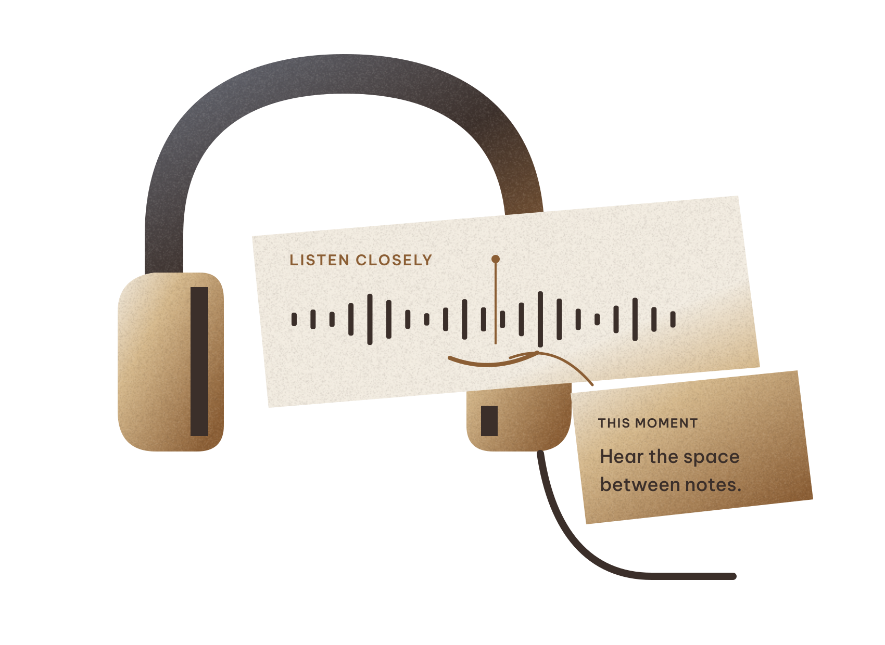
A teacher focuses listening on one marked moment in the learner’s recording. The waveform is illustrative and is not an assessment graph. Recommended ≥480 px.
05_GRAPHIC_ARTWORK/Grain_Gradient/para-art-03-listen-en-grain.svg
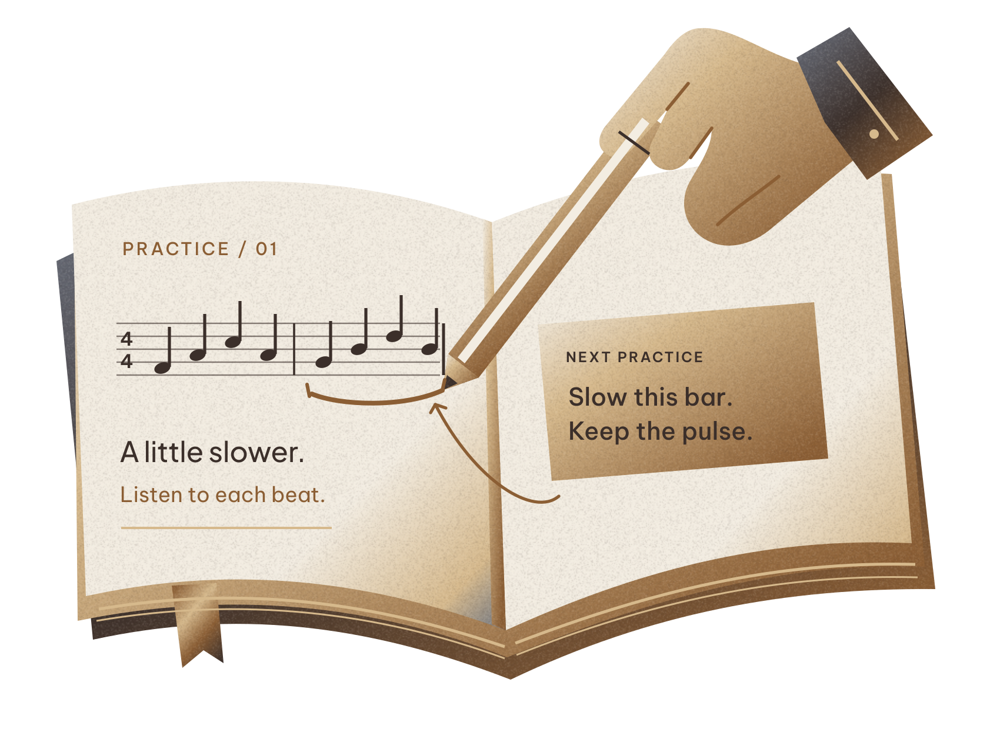
The approved teacher-guidance composition: a pencil marks a bar and a short note gives the next practice focus. Recommended ≥480 px.
05_GRAPHIC_ARTWORK/Grain_Gradient/para-art-04-feedback-en-grain.svg
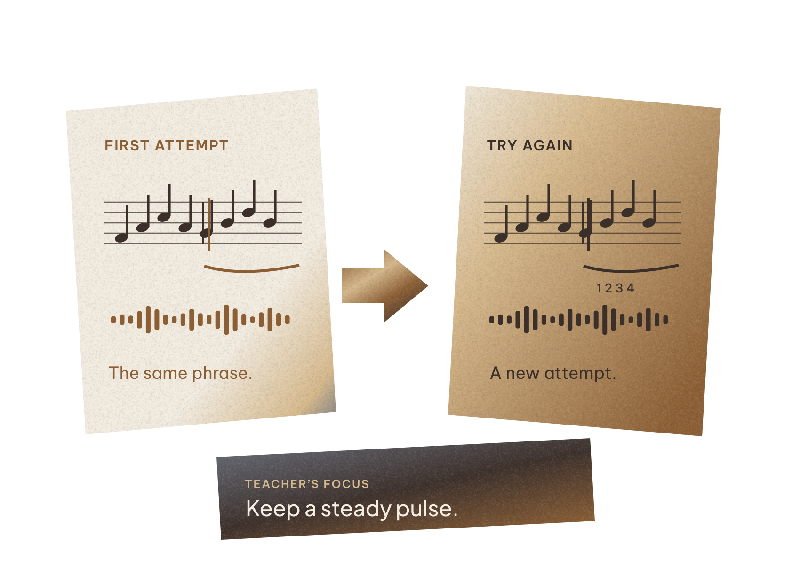
Two attempts stay separate and understandable. The same highlighted bar and teacher focus carry into another attempt; there is no score or guaranteed improvement. Recommended ≥480 px.
05_GRAPHIC_ARTWORK/Grain_Gradient/para-art-05-try-again-en-grain.svg
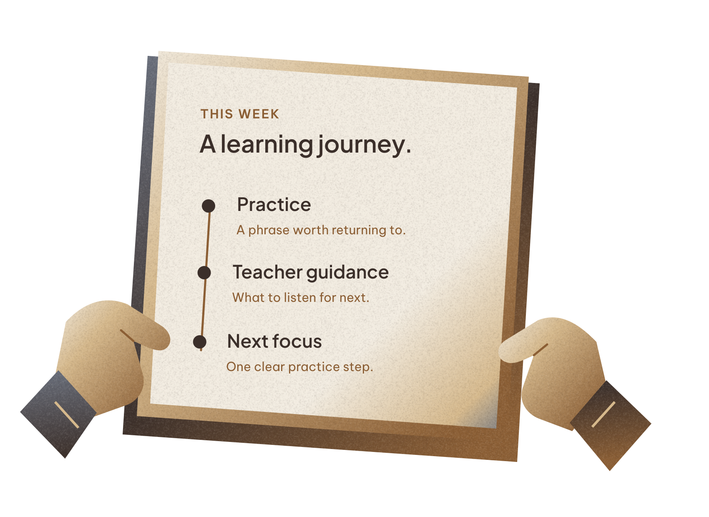
A parent holds a learning journal organised around effort, teacher guidance and the next focus. This is a conceptual communication image, not an available parent-report screen. Recommended ≥480 px.
05_GRAPHIC_ARTWORK/Grain_Gradient/para-art-06-parent-journey-en-grain.svg
Reusable material field. Use as an editable fill or mask, with the separate grain tile and documented recipe.
06_GRADIENTS_AND_TEXTURES/Editable_Gradients/para-material-warm-gradient.svg
Reusable material field. Use as an editable fill or mask, with the separate grain tile and documented recipe.
06_GRADIENTS_AND_TEXTURES/Editable_Gradients/para-material-deep-gradient.svg
Reusable material field. Use as an editable fill or mask, with the separate grain tile and documented recipe.
06_GRADIENTS_AND_TEXTURES/Editable_Gradients/para-material-quiet-gradient.svg
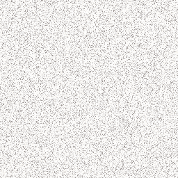
Separate raster material; seed 2718. Clip inside vector shapes. Never call it editable vector grain.
06_GRADIENTS_AND_TEXTURES/Grain_Overlays/para-film-grain-256.png
Optional overlay for your real landing-page photography. No photograph is supplied or processed.
07_PHOTOGRAPHY_GUIDANCE/para-photo-lower-shade.svg
Optional overlay for your real landing-page photography. No photograph is supplied or processed.
07_PHOTOGRAPHY_GUIDANCE/para-photo-rising-frame-ivory.svg
Optional overlay for your real landing-page photography. No photograph is supplied or processed.
07_PHOTOGRAPHY_GUIDANCE/para-photo-rising-frame-espresso.svg
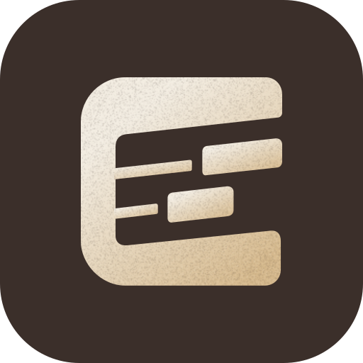
Compact application proposal. Only the separate 16 px SVG/PNG removes the two thin ties; all other proposed forms retain the original symbol.
01_LOGO/App_Favicon_Proposals/para-app-espresso-PROPOSAL.svg
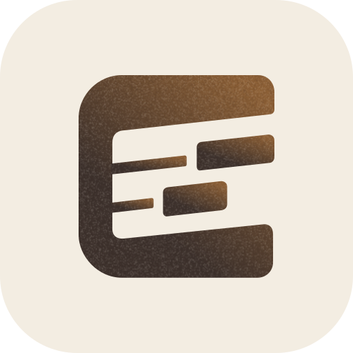
Compact application proposal. Only the separate 16 px SVG/PNG removes the two thin ties; all other proposed forms retain the original symbol.
01_LOGO/App_Favicon_Proposals/para-app-ivory-PROPOSAL.svg
Compact application proposal. Only the separate 16 px SVG/PNG removes the two thin ties; all other proposed forms retain the original symbol.
01_LOGO/App_Favicon_Proposals/para-favicon-32-PROPOSAL.svg
Compact application proposal. Only the separate 16 px SVG/PNG removes the two thin ties; all other proposed forms retain the original symbol.
01_LOGO/App_Favicon_Proposals/para-favicon-16-PROPOSAL.svg
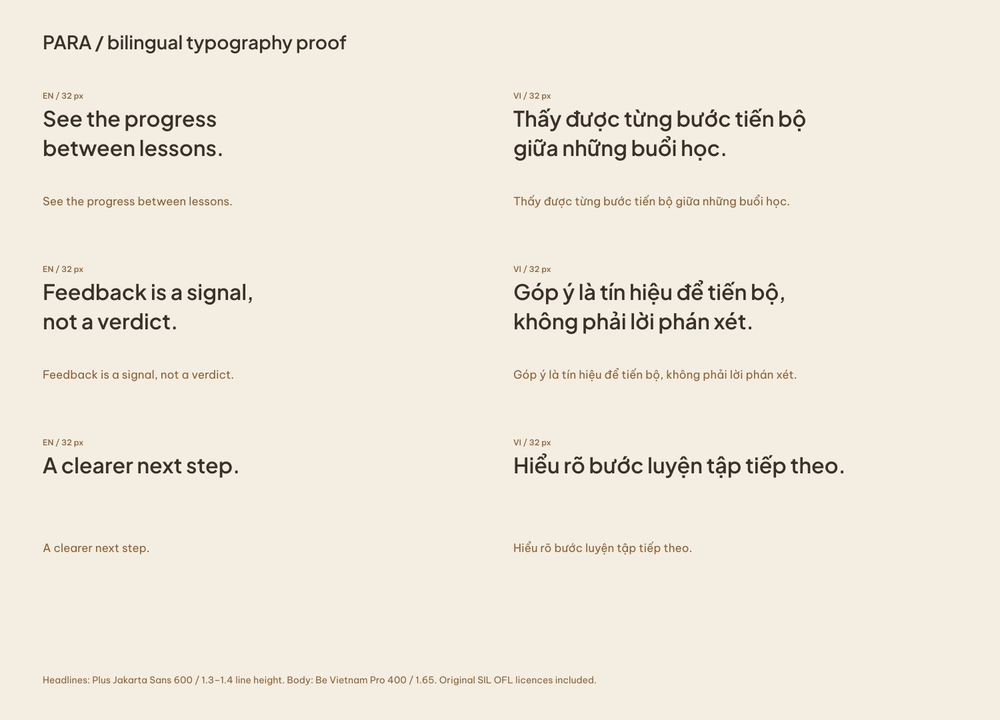
Editable specification board. Refer to the adjacent guide for detailed use rules.
03_TYPOGRAPHY/English_Vietnamese_Specimens/para-bilingual-proof.svg
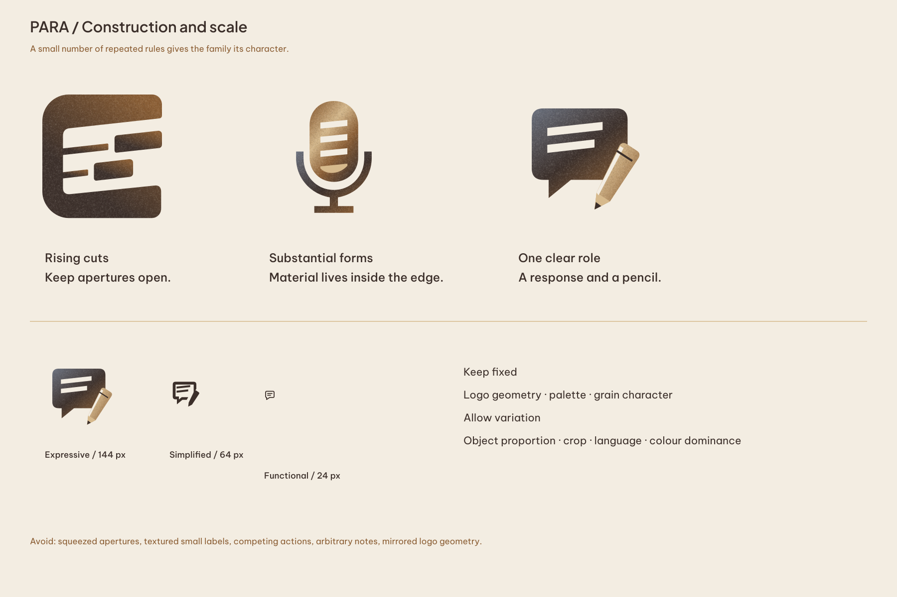
Editable specification board. Refer to the adjacent guide for detailed use rules.
08_GUIDELINES_AND_CATALOGUE/para-construction-rules.svg
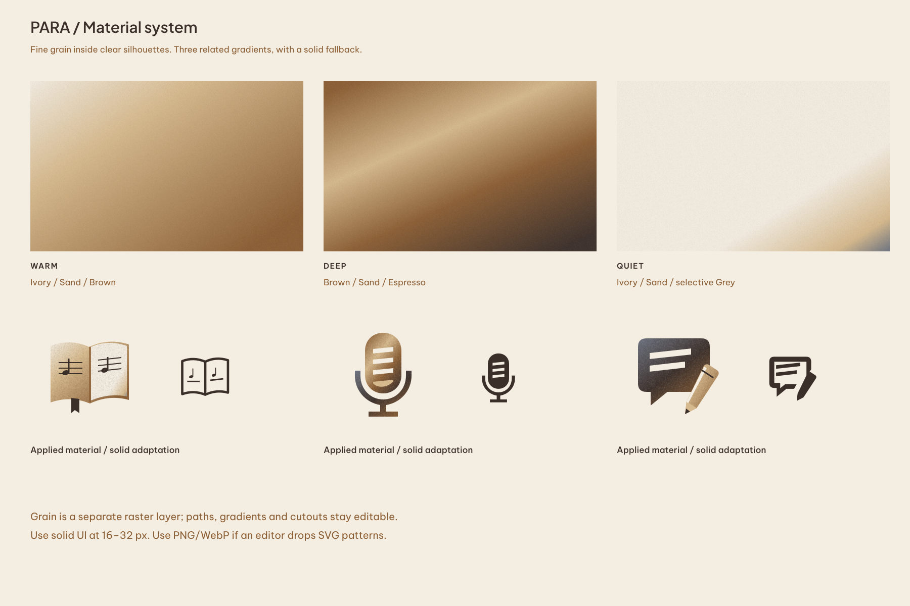
Editable specification board. Refer to the adjacent guide for detailed use rules.
08_GUIDELINES_AND_CATALOGUE/para-material-system.svg
No matching assets. Clear the search or choose All families.